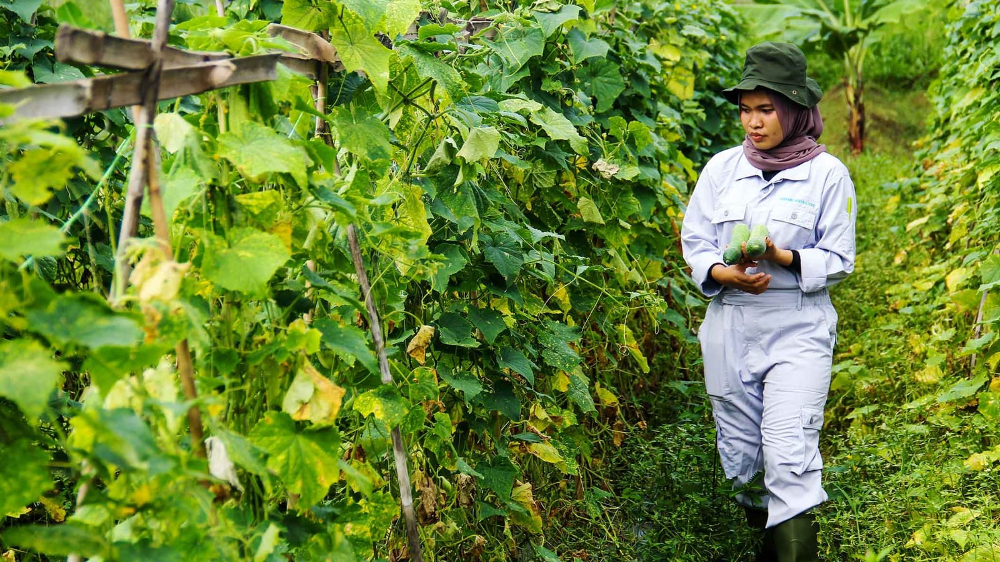
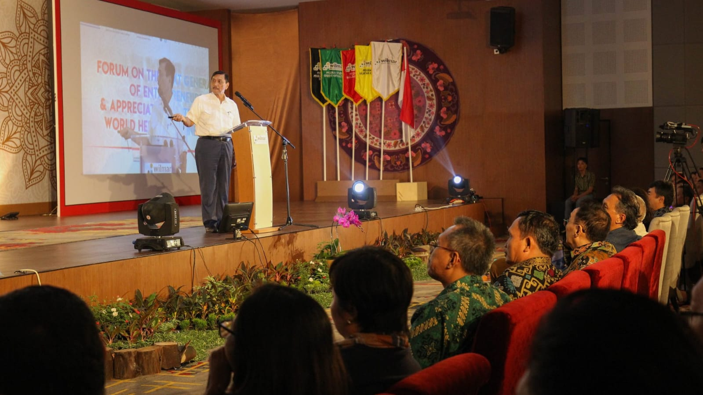

Tentang Kami
Politeknik Wilmar Bisnis Indonesia (WBI) adalah perguruan tinggi yang didirikan oleh salah satu pebisnis sukses Indonesia kelahiran Pematang Siantar, Martua Sitorus. Melalui program studi yang didukung oleh staf pengajar yang ahli di bidangnya serta fasilitas kampus yang modern, Politeknik WBI berkomitmen menjadi institusi pendidikan yang terbaik dan ideal bagi orang muda Indonesia untuk siap bersaing di dunia bisnis yang semakin kompetitif di era industri 4.0 ini. Program pendidikan di Politeknik WBI telah didesain sedemikian rupa untuk melahirkan sosok entrepreneur-entrepreneur muda terdidik, terampil, dan tangguh dari ‘bangku kuliah’. Tujuan tersebut tentunya akan memperkuat ketahanan nasional bangsa Indonesia, sesuai dengan motto Politeknik WBI yakni “Nurturing Entrepreneurs, Empowering Nation”.
Fasilitas
Politeknik Wilmar Bisnis Indonesia memiliki fasilitas yang memadai, berikut ini saya lampirkan.
Lingkungan
Lingkungan Politeknik WBI sangat bersih dan dilengkapi dengan taman-taman bunga, yang membuat suasana tentram dan nyaman.
Lab Komputer
PWBI difasilitasi dengan Lab Komputer
Perpustakaan
Bekerjasama dengan BIPerpustakaan WBI cukup memadai dengan nuansa yang indah dan berbagai macam buku.
Auditorium
Berbagai acara besar di PWBI dilaksanakan, Auditorium menjadi fasilitas utamanya
Mini Theater
Untuk acara penting di ruangan kecil, PWBI menggunakan Mini Theater, karna di sini fasilitas untuk setiap acara sangat mendukung
Pusat inisiatif Bisnis WBI
WBI-CPusat inisiatif Bisnis (WBI-C) menjadi tempat untuk merancang, mendiskusikan dan juga merealisasikan ide bisnis Mahasiswa
Terampil
Di WBI anda akan dilatih untuk terampil dalam mengembangkan ide bisnis dan juga pelajaran yang ada
Berkarakter
Ada berbagai macam acara untuk meningkatkan karakter Mahasiswa, antara lain Seni, UKM, KM dan juga berbagai seminar
Berinovasi
Dalam mengembangkan model bisnis Mahasiswa dilatih untuk berinovasi supaya menjadi jalan keluar costumer
Bersaing
Persaingan menjadi pedoman dalam menjalankan usaha, di WBI kita Mahasiswa bersaing sehat dalam pengembangan dan juga inovasi
Jurusan
Ada lima Program Studi di Politeknik WBI, dengan manfaat dan keunggulannya masing-masing, sebagai berikut
Manajemen Pemasaran Internasional
Program Studi Manajemen Pemasaran Internasional merupakan program studi yang dipersiapkan untuk menjawab tantangan pasar kompetitif global yang membawa persaingan pasar yang semakin ketat di masa depan. Program ini membekali mahasiswa dengan pengetahuan terkini, praktik pemasaran, soft skill yang memungkinkan mereka untuk menjadi sosok yang kreatif dan adaptif, serta memperluas keterampilan dan kapasitas mahasiswa.
Akutansi Perpajakan
Menjadi pusat dan rujukan pengembangan keilmuan terapan di bidang akuntansi dan perpajakan yang adaptif terhadap lingkungan bisnis berstandar internasional yang berkarakter entrepreneurship pada tahun 2030

Agribisnis Hortikultura
Program Studi Agribisnis Hortikultura Politeknik Wilmar Bisnis Indonesia merupakan program studi sarjana terapan yang berfokus pada pengembangan penelitian terapan yang memanfaatkan teknologi dalam bidang pertanian untuk menghasilkan enterpreneur dalam bidang Agribisnis Hortikultura.
Pengelolaan Konvensi Acara
Program Studi Pengelolaan Konvensi dan Acara (PKA) Politeknik Wilmar Bisnis Indonesia mengembangkan pendidikan berbasis bisnis, sehingga setiap mahasiswa PKA di arahkan untuk berbisnis dalam bidang pariwisata serta pengelolaan konvensi dan acara.
Tekhnologi Rekayasa Perangkat Lunak
Pengembangan dan penerapan teknologi rekayasa perangkat lunak yang inovatif dan adaptif dalam mendukung digitalisasi entrepreneurship dalam lingkungan global
Layanan
Silahkan Mengisi formulir
Contact Info
-
jln. Batu Sihombing
Tembung, Deli Serdang - (+62) 8897-572-5002
- rodomarbun17@gmail.com
- Samuely.com
Formulir Reservasi